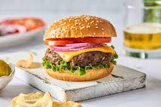

Cheese Burger

Description
A cheeseburger is a hamburger topped with cheese. Traditionally, the slice of cheese is placed on top of the meat patty. The cheese is usually added to the hamburger patty near the end of the cooking time, which allows the cheese to melt.
Cheeseburgers can include variations in structure, ingredients and composition.
Ingredients
- 1/2 cup mayonnaise
- 1/4 cup ketchup
- 3 tablespoons dill pickle relish
- 1 tablespoon dijon mustard
- 2 pounds ground beef, 80/20
- salt and pepper
- 1 tablespoon canola oil
- American cheese
- buns
- sliced tomatoes
- pickles
Steps
- BURGER SAUCE: In a small bowl, whisk together
mayonnaise, ketchup, dill pickle relish and Dijon; set aside.
- In a large bowl, combine beef, 1 1/2 teaspoons salt and 1 1/2 teaspoons pepper. Using a wooden spoon or clean hands, stir until well combined. Gently form into 6 1-inch-thick patties, about the size of the hamburger buns.
- Heat canola oil in a large cast iron skillet over medium high heat. Add patties and cook until lightly charred or until desired doneness, about 3-5 minutes per side; top with cheese.
- Serve immediately in hamburger buns with BURGER SAUCE and desired toppings.